Up: 研究法や分析法に関するメモ Previous: てこ比：主成分分析による多変量外れ値の検出
「SASによる実験データの解析」第14章
図9.1は、薬剤の投与によってラットの肝臓量と体重がどう変化するか検証するために集められたデータ dataliverweight.csv である。
図9.2は薬剤の有無別にデータをプロットしたものである。 体重が同じであれば、薬ありの方が肝臓量は高い傾向にある。
特性 について、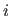
群の
番目の観測値を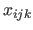
とする。
このとき、通常の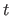
検定では、検定統計量
について、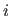
群の
番目の観測値を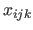
とする。
このとき、通常の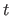
検定では、検定統計量
| 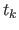 | 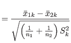 | (9.12) |
| 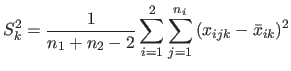 | (9.13) |
ここで、
| 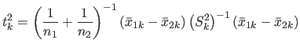 | (9.14) |
例のように特性が2個の場合、
| 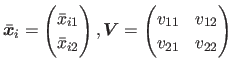 | (9.15) |
| 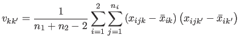 | (9.16) |
このとき、
| 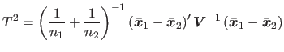 | (9.17) |
もし帰無仮説 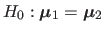 が真で、観測値ベクトルが共通の群内母分散共分散行列をもつ多変量正規分布に従うなら、
| 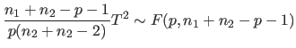 | (9.18) |
Rでは、DescToolsパッケージの関数 HotellingsT2Test() によってHotellingの にもとづいた 検定を行うことができる。
図9.1のデータ dataliverweight.csv で肝臓量と体重の平均が薬の有無に関わらず等しいという帰無仮説を検定するには、以下のスクリプトを実行すればよい。
> library("DescTools")
> head(data01,5)
個体 薬 肝臓量 体重
1 1 x 710 245
2 2 x 627 224
3 3 x 865 342
4 4 x 1064 403
5 5 x 736 214
> HotellingsT2Test(cbind(肝臓量, 体重)~薬, data=data01)
Hotelling's two sample T2-test
data: cbind(肝臓量, 体重) by 薬
T.2 = 41.086, df1 = 2, df2 = 17, p-value = 3.087e-07
alternative hypothesis: true location difference is not equal to c(0,0)
このアウトプットでは 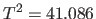 であるかのように表示されているが、本当は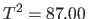 であり、T.2の値は 値である。 結果は、 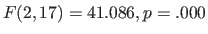 と書ける。
特性が2つ以上の場合、ANOVAにおける平方和の分割を平方和積和行列の分割として以下のように拡張できる。
| 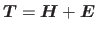 | (9.19) |
| 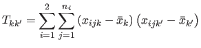 | (9.20) |
| 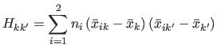 | (9.21) |
| 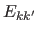 | 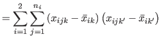 | (9.22) |
| (9.23) |
平方和積和行列の対角成分には特性 に関する平方和が、非対角成分には特性
に関する平方和が、非対角成分には特性 と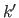
の積和（共分散
自由度）が格納されている。
と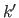
の積和（共分散
自由度）が格納されている。
このとき、
| 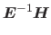 | (9.24) |
| 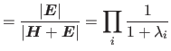 [Wilksのラムダ] | (9.25) | |
| 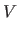 | 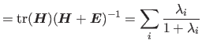 [Pillaiのトレース] | (9.26) |
| 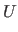 | 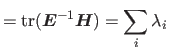 [Hotelling-Lawleyのトレース] | (9.27) |
| 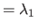 [Royの最大根] | (9.28) |
例のように2特性2群比較だと、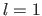 であり、
| 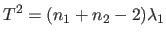 | (9.29) |
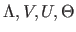
は
の時のみ等しい値を取り、かつ正確に の下で
分布に従う。
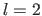
のときは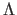
のみが正確。
の下で
分布に従う。
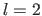
のときは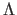
のみが正確。
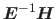
の固有ベクトルを用いて、もとのデータを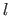
個の正準変量に変換することができる。
これらを
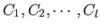
とすると、 は群内平方和が1、群内積和が0となるように基準化されており、かつ群間平方和が最大値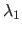
を取る。
また、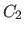
は
は群内平方和が1、群内積和が0となるように基準化されており、かつ群間平方和が最大値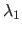
を取る。
また、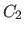
は と無相関かつ群内平方和が1、群内積和が0で、群間平方和が最大値
を取る。
以下同様。
と無相関かつ群内平方和が1、群内積和が0で、群間平方和が最大値
を取る。
以下同様。
群間差を視覚的に把握するため、特性数が3以上、群の数が2以上の場合、正準変量を2次元平面上にプロットすることがある。 これを正準判別分析という。
Rでは、MANOVAによる分析を行うための関数 manova() が装備されている。
図9.1のデータ dataliverweight.csv で肝臓量と体重の平均が薬の有無に関わらず等しいという帰無仮説をMANOVAによって検定するには、以下のスクリプトを実行すればよい。
> fit01 <- manova(cbind(肝臓量, 体重)~薬, data=data01)
> summary(fit01, test="Wilks")
Df Wilks approx F num Df den Df Pr(>F)
薬 1 0.17142 41.086 2 17 3.087e-07 ***
Residuals 18
---
Signif. codes: 0 ‘***’ 0.001 ‘**’ 0.01 ‘*’ 0.05 ‘.’ 0.1 ‘ ’ 1
> summary(fit01, test="Pillai") # デフォルト
Df Pillai approx F num Df den Df Pr(>F)
薬 1 0.82858 41.086 2 17 3.087e-07 ***
Residuals 18
---
Signif. codes: 0 ‘***’ 0.001 ‘**’ 0.01 ‘*’ 0.05 ‘.’ 0.1 ‘ ’ 1
> summary(fit01, test="Hotelling-Lawley")
Df Hotelling-Lawley approx F num Df den Df Pr(>F)
薬 1 4.8337 41.086 2 17 3.087e-07 ***
Residuals 18
---
Signif. codes: 0 ‘***’ 0.001 ‘**’ 0.01 ‘*’ 0.05 ‘.’ 0.1 ‘ ’ 1
> summary(fit01, test="Roy")
Df Roy approx F num Df den Df Pr(>F)
薬 1 4.8337 41.086 2 17 3.087e-07 ***
Residuals 18
---
Signif. codes: 0 ‘***’ 0.001 ‘**’ 0.01 ‘*’ 0.05 ‘.’ 0.1 ‘ ’ 1
この例は2群比較であるので、 より4つの統計量いずれにもとづいても同じ結果が得られる。
上記の例ではMANOVAで群間差が有意であったので、次に特性ごとのANOVAを行うことになる。 この場合、関数 summary.aov() に manova() の結果を渡せばよい。
> summary.aov(fit01)
Response 体重 :
Df Sum Sq Mean Sq F value Pr(>F)
薬 1 4590 4590.4 0.7883 0.3863
Residuals 18 104813 5823.0
Response 肝臓量 :
Df Sum Sq Mean Sq F value Pr(>F)
薬 1 66817 66817 3.2366 0.0888 .
Residuals 18 371599 20644
---
Signif. codes: 0 ‘***’ 0.001 ‘**’ 0.01 ‘*’ 0.05 ‘.’ 0.1 ‘ ’ 1
この場合、MANOVAでは有意差が得られていたものが、体重と肝臓量それぞれについて検討すると、有意差なしという結果になる。
上記の例で、平方和積和行列 と の固有値は以下の通り。
> summary(fit01)$SS
$薬
肝臓量 体重
肝臓量 66816.8 -17513.40
体重 -17513.4 4590.45
$Residuals
肝臓量 体重
肝臓量 371599.4 189145.9
体重 189145.9 104813.3
> summary(fit01)$Eigenvalues
[,1] [,2]
薬 4.833669 0
後藤 (1973, p.212) を参照して正準変量を算出すると、以下の通り。
> # E^(-1) %*% H の固有ベクトル
> H <- summary(fit01)$SS[[1]]
> E <- summary(fit01)$SS[[2]]
> inverseE.H <- solve(E) %*% H
> eigen.v <- eigen(inverseE.H)$vectors
>
> c.v <- cbind(scale(data01$肝臓量, scale=F), scale(data01$体重, scale=F)) %*%
+ eigen.v # 正準変量
> colnames(c.v) <- c("c1","c2")
> data02 <- cbind(data01[,1:2],c.v)
> head(data02, n=3)
個体 薬 c1 c2
1 1 x -53.79489 -70.81384
2 2 x -74.67694 -112.17194
3 3 x -65.66752 62.31613
図9.3は薬剤の有無別に正準変量をプロットしたものである 後藤 (1973, p.212) では各変数から全体平均を引いたものに固有ベクトルをかけることで正準変量を求めている。 一方、「SASによる実験データの解析」図表 14.3（p.275）ではこれとメトリックが異なっているし、そもそもSASのアウトプットでは固有ベクトル（に何かを演算したもの）を用いて正準変量を算出している（図表14.2, p.272）。 この点については詳しく説明されていないのでよくわからない。
図9.4は、降圧剤の投与量（10mg, 20mg）と血圧の経時変化（投与前、1時間後、3時間後）に関するデータ databloodpressure.csv を示したものである。
図9.5は、このデータを箱ひげ図として表したものである。 投与後時間が経過するごとに血圧が下がっていくこと、また20mg投与群の方が10mg投与群より全体的に血圧の低いことがわかる。 低下の程度は20mg投与群の方が大きいようにも見えるが、判然とはしない。
今、Hotellingの とMANOVAによって、10mg群と20mg群で血圧の母平均ベクトルが等しいという帰無仮説を検定する。 すると、 となってこの帰無仮説は棄却される23。
ただし、母平均ベクトルが2群で等しくないという結果だけでは、「血圧の高さそのものが異なる」のか「血圧の下がり方が異なる」のかわからない。
Rのスクリプトと実行結果は以下の通り。
> HotellingsT2Test(cbind(投与前, 一時間後, 三時間後)~降圧剤, data=data01)
Hotelling's two sample T2-test
data: cbind(投与前, 一時間後, 三時間後) by 降圧剤
T.2 = 5.5624, df1 = 3, df2 = 8, p-value = 0.02334
alternative hypothesis: true location difference is not equal to c(0,0,0)
> fit01 <- manova(cbind(投与前, 一時間後, 三時間後)~降圧剤, data=data01)
> summary(fit01, test="Wilks")
Df Wilks approx F num Df den Df Pr(>F)
降圧剤 1 0.32405 5.5624 3 8 0.02334 *
Residuals 10
---
Signif. codes: 0 ‘***’ 0.001 ‘**’ 0.01 ‘*’ 0.05 ‘.’ 0.1 ‘ ’ 1
同じデータについて、repeated ANOVAによる分析も行ってみることにしよう24。 Rのデフォルトの関数 aov() を用いることにすると25、従属変数が1列になるようデータの変形を行って、
> data02 <- data.frame(被験者=factor(rep(data01[,1],3)),
+ 降圧剤=rep(data01[,2],3),
+ 時間=c(rep("0h",12),rep("1h",12),rep("3h",12)),
+ 血圧=rbind(as.matrix(data01[,3]),
+ as.matrix(data01[,4]),
+ as.matrix(data01[,5])))
> head(data02,5)
被験者 降圧剤 時間 血圧
1 1 10mg 0h 119
2 2 10mg 0h 110
3 3 10mg 0h 123
4 4 10mg 0h 130
5 5 10mg 0h 121
>
> fit02 <- aov(血圧~降圧剤*時間+Error(被験者/時間), data=data02)
> summary(fit02)
Error: 被験者
Df Sum Sq Mean Sq F value Pr(>F)
降圧剤 1 182.2 182.2 1.806 0.209
Residuals 10 1009.4 100.9
Error: 被験者:時間
Df Sum Sq Mean Sq F value Pr(>F)
時間 2 742.1 371.0 10.343 0.000824 ***
降圧剤:時間 2 115.2 57.6 1.605 0.225663
Residuals 20 717.4 35.9
---
Signif. codes: 0 ‘***’ 0.001 ‘**’ 0.01 ‘*’ 0.05 ‘.’ 0.1 ‘ ’ 1
となる。 時間の主効果は有意であるものの、降圧剤の主効果、降圧剤と時間の交互作用は有意でない。
ただし、関数 aov() を用いるやり方では以下のような限界がある。
パッケージ car の関数 Anova() を用いることで、平方和の種類と球面性の仮定については解決できる26。 同じ分析を、タイプIIIの平方和を指定して行った場合の結果は以下の通り。
> library(car)
> fit03 <- Anova(lm(as.matrix(data01[,3:5])~降圧剤, data=data01),
+ idata=data.frame(時間=factor(c(0,1,3))),
+ idesign=~時間, type="III")
> summary(fit03, multivariate=F)
Univariate Type III Repeated-Measures ANOVA Assuming Sphericity
SS num Df Error SS den Df F Pr(>F)
(Intercept) 253235 1 1009.39 10 2508.7924 2.431e-13 ***
降圧剤 182 1 1009.39 10 1.8055 0.20874
時間 342 2 717.44 20 4.7685 0.02026 *
降圧剤:時間 115 2 717.44 20 1.6052 0.22566
---
Signif. codes: 0 ‘***’ 0.001 ‘**’ 0.01 ‘*’ 0.05 ‘.’ 0.1 ‘ ’ 1
Mauchly Tests for Sphericity
Test statistic p-value
時間 0.56172 0.074618
降圧剤:時間 0.56172 0.074618
Greenhouse-Geisser and Huynh-Feldt Corrections
for Departure from Sphericity
GG eps Pr(>F[GG])
時間 0.69528 0.03672 *
降圧剤:時間 0.69528 0.23315
---
Signif. codes: 0 ‘***’ 0.001 ‘**’ 0.01 ‘*’ 0.05 ‘.’ 0.1 ‘ ’ 1
HF eps Pr(>F[HF])
時間 0.7721787 0.03157477
降圧剤:時間 0.7721787 0.23172547
この例では、Mauchlyの検定により球面性の仮定は棄却されない。 よって結果は変わらず、時間の主効果のみが有意ということになる。 ただし、これでもTukeyHSD()で多重比較を行うことはできない。
時間の主効果が有意であったので、時間に伴う血圧変化が線形であるか対比を用いて検定する。
| (9.30) |
| (9.31) |
> contrast <- matrix(c(1,-1,0, + 0,1,-1), 2, 3, byrow=T) > psi <- cbind(data01$投与前, data01$一時間後, data01$三時間後) %*% t(contrast) > data03 <- cbind(data01[,1:2],data.frame(psi1=psi[,1],psi2=psi[,2])) > head(data03, 5) 被験者 降圧剤 psi1 psi2 1 1 10mg 6 -1 2 2 10mg -5 3 3 3 10mg -3 15 4 4 10mg 3 27 5 5 10mg 6 -9
これをANOVAで分析することにする。
> data04 <- data.frame(被験者=factor(rep(data03[,1],2)), # ※factor()を忘れないこと
+ 降圧剤=rep(data03[,2],2),
+ 対比=factor(c(rep(1,12),rep(2,12))),
+ 血圧変化=rbind(as.matrix(data03[,3]),
+ as.matrix(data03[,4])))
> head(data04,5)
被験者 降圧剤 対比 血圧変化
1 1 10mg 1 6
2 2 10mg 1 -5
3 3 10mg 1 -3
4 4 10mg 1 3
5 5 10mg 1 6
> fit05 <- aov(血圧変化~降圧剤*対比+Error(被験者/対比), data=data04)
> summary(fit05)
Error: 被験者
Df Sum Sq Mean Sq F value Pr(>F)
降圧剤 1 2.7 2.67 0.055 0.819
Residuals 10 485.3 48.53
Error: 被験者:対比
Df Sum Sq Mean Sq F value Pr(>F)
対比 1 48.2 48.2 0.692 0.4250
降圧剤:対比 1 337.5 337.5 4.847 0.0523 .
Residuals 10 696.3 69.6
---
Signif. codes: 0 ‘***’ 0.001 ‘**’ 0.01 ‘*’ 0.05 ‘.’ 0.1 ‘ ’ 1
対比の主効果は有意でなく、「血圧の減少は線形である」という帰無仮説は棄却されなかった（ ）。 なお、降圧剤の効果および交互作用も有意でない。
以下、「SASによる実験データの解析」第12章（p.248-）による。
ある群での経時観測値 の分散共分散行列が であるとする。 このとき、正規性と分散共分散行列の等質性に加え、
| (9.32) | ||
| (9.33) |
これは、 に直交する 本の正規直交対比 について、その分散共分散行列が であることとも同等である。 これを、正規直交対比の分布に関する球面性の仮定という。
正規直交対比のプールされた平方和積和行列を とすると、
| (9.34) |
| (9.35) |
球面性の仮定が満たされていないと、 値は実際よりも小さくなることが知られている。
Greenhouse & Geiser (1959) により、母集団標準偏差 の関数
| (9.36) |
| (9.37) |
この について、定義式中の を で置き換えたものを とすると、Huynh & Feldt (1976) によりバイアスを修正した
| (9.38) |
| (9.39) |
球面性の仮定が棄却されたり、 となるようなケースでは、自由度修正を行うことが推奨される。
Taichi Okumura